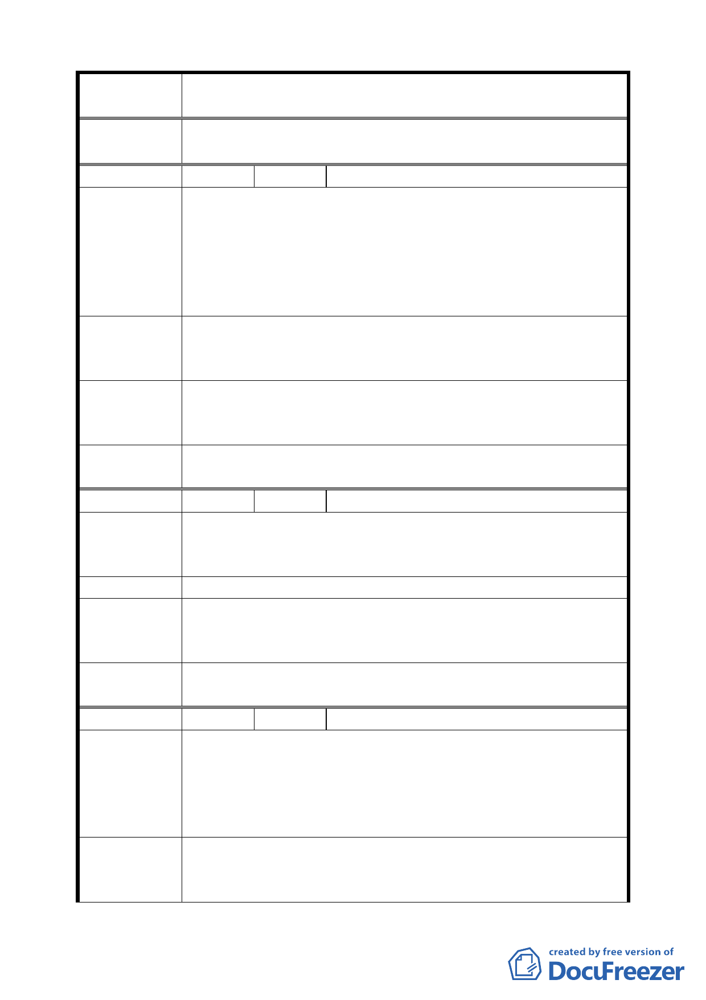

案 名 臺北市文山區都市計畫通盤檢討（細部計畫）案
委員會議
決議
依專案小組審查結論辦理。
編 號 １８ 陳情人 劉宗勳里長
建議位置：公訓段三小段 388、389 地號（興隆路三段 1 弄
269 巷 1 至 6 號）。
陳 情 理 由 建議理由：
（ 細 木 3 ） 該地段為軍方用地，目前已整地平整後為道路，也是 269 巷
住戶進出使用（269 巷通往 229 巷及通往 307 號後巷），如變
更為公園，恐不利當地交通通暢。
一、 該地段有一住家 311 號。
建 議 辦 法 二、 該地段現是停車場及道路。
三、 是否可變更為其他項目？
專案小組
審 查 結 論 同意市府原公展方案變更為公園用地。
（94.7.4）
委員會議
決議
依專案小組審查結論辦理。
編 號 １９ 陳情人 文山區公所（09430074500）
陳情理由
（細木 8）
建議理由：中興山莊南側公園用地。
建議理由：
原道路為 10 公尺寬，應依現況寬度變更為宜。
建 議 辦 法 依現況寬度變更為道路用地。
專案小組
審 查 結 論 同意文山區公所之建議，依現況調整道路寬度為 10 公尺。
（94.7.4）
委員會議
決議
依專案小組審查結論辦理，並修正本案「細木 8」計畫內容。
編 號 ２０ 陳情人 許阿買、林樹欉（09430082800）
建議位置：萬芳段四小段 277-1、264、273、273-1、271-1、
陳情理由
（萬芳）
272、274-3、277 地號（萬芳路 5、5-1、7、7-1、9、9-1 號）。
建議理由：
上列土地地號敬請惠予變更為住三，比照萬芳社區辦理為
禱。容積率 225％。
一、 萬芳路兩旁沿線係平地非丘陵地，地質良好，請准予變
建議辦法
更住三增加土地利用價值及都市景觀。
二、 萬芳路旁側 7、7-1、9、9-1、5、5-1 號已建好完工，期
三七